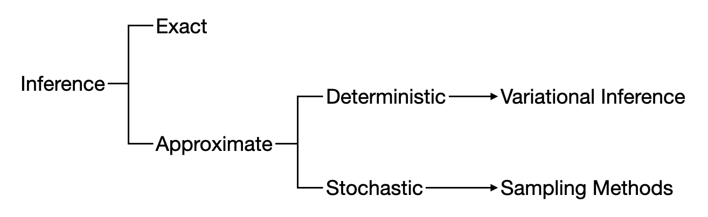

变分推断
近似推断
在许多机器学习问题中，一个核心任务是给定观测数据 \(x\)，估计隐变量 \(z\) 的后验分布 \(p(z\vert x)\)，或者估计某函数 \(f(z)\) 关于后验分布的期望 \(\mathbb E_{z\sim p(z\vert x)}[f(z)]\). 这样的估计过程就是所谓的推断 (inference)。例如，在 EM 算法中我们就需要估计完整数据的对数似然关于后验分布的期望。
然而，许多问题的后验分布是不可解 (intractable) 的，因为根据贝叶斯公式，后验分布为： \[ p(z\vert x)=\frac{p(x\vert z)}{p(x)}=\frac{p(x\vert z)p(z)}{\displaystyle\int_{z'}p(x\vert z')p(z')\mathrm dz'} \] 其分母涉及对全体隐变量的积分，只有隐空间取值离散且维度较小时才有可能精确计算。因此，人们提出了许多近似推断 (approximate inference) 方法来解决这个问题。
近似推断方法可以大体分为两类——确定性方法和随机性方法。确定性方法的典型代表就是变分推断 (variational inference)，而随机性方法的典型代表是马尔可夫链蒙特卡洛 (MCMC)。注意变分推断和 MCMC 都是一类方法的统称。本文主要探究变分推断方法。

变分推断
设观测数据为 \(x\)，隐变量为 \(z\)，同 EM 算法的推导一样，为 \(z\) 引入一个分布 \(q(z)\)，则有： \[ \begin{align} \log p(x)&=\int_zq(z)\log p(x)\mathrm dz\\ &=\int_zq(z)\log\frac{p(x,z)}{p(z\vert x)}\mathrm dz\\ &=\int_zq(z)\log\left(\frac{p(x,z)}{q(z)}\cdot\frac{q(z)}{p(z\vert x)}\right)\mathrm d z\\ &=\int_zq(z)\log\frac{p(x,z)}{q(z)}\mathrm dz+\int_zq(z)\log\frac{q(z)}{p(z\vert x)}\mathrm dz\\ &=\mathcal L(q)+\text{KL}(q(z)\Vert p(z\vert x)) \end{align} \] 我们可以通过最大化 \(\mathcal L(q)\) 来最大化对数似然 \(\log p(x)\)，这等价于最小化 KL 项。如果不限制 \(q(z)\) 的形式，那么显然当 \(q(z)=p(z\vert x)\) 时 KL 项达到最小值 \(0\)，这就是 EM 算法做的事情。但是现在问题的基本假设是 \(p(z\vert x)\) 是不可解的，因此无法通过直接令 \(q(z)=p(z\vert x)\) 求解。为此，我们考虑为 \(q(z)\) 引入一些假设以使得问题可解。值得注意的是，人为引入假设意味着 \(q(z)\) 的形式被限制了，因此这样求出的解并不是真正的最优解，这就是为什么变分推断属于近似推断而非精确推断。
根据引入的假设的不同，我们就得到了不同的变分推断方法，例如：
- 平均场变分推断：假设 \(q(z)\) 可分解为各分量密度函数之乘积；
- 随机梯度变分推断：假设 \(q(z)\) 是以 \(\phi\) 为参数的分布族并使用随机梯度下降优化之。
顺便补充一点，由于 \(\mathcal L(q)\) 的自变量是概率密度函数 \(q(z)\)，所以 \(\mathcal L(q)\) 是一个泛函。求泛函极值的方法被称作变分法，这就是变分推断这个名称的由来。
平均场变分推断
设隐变量 \(z=(z_1,\ldots,z_m)\in\mathbb R^m\)，并且假设 \(q(z)\) 可分解为各分量密度函数之乘积： \[ q(z)=\prod_{i=1}^mq_i(z_i) \] > 注：其实 \(z_i\) 不一定真的是一个分量，也可以是一些分量形成的一个组，但本质一样的，不影响推导。
由于这种假设来源于统计力学中的平均场理论 (mean-field theory)，因此称该假设下的变分推断为平均场变分推断。
将上式代入 \(\mathcal L(q)\) 得： \[ \begin{align} \mathcal L(q)&=\int_zq(z)\Big(\log p(x,z)-\log q(z)\Big)\mathrm dz\\ &=\int_z\prod_{i=1}^mq_i(z_i)\bigg(\log p(x,z)-\sum_{k=1}^m\log q_k(z_k)\bigg)\mathrm dz\\ &=\int_z\prod_{i=1}^mq_i(z_i)\log p(x,z)\mathrm dz-\int_z\prod_{i=1}^mq_i(z_i)\sum_{k=1}^m\log q_k(z_k)\mathrm dz \end{align} \] 为了最大化 \(L(q)\)，可以逐个优化 \(q_j(z_j)\) 并不断迭代。为此，固定 \(z_1,\ldots,z_{j-1},z_{j+1},\ldots,z_m\) 不动，将 \(z_j\) 视为变量，则： \[ \begin{align} \mathcal L(q)&=\int_{z_j}q_j(z_j)\left[\int_{z_{/j}}\log p(x,z)\prod_{i\neq j}q_i(z_i)\mathrm dz_{/j}\right]\mathrm dz_j-\int_{z_j}q_j(z_j)\log q_j(z_j)\mathrm dz_j+\text{const}\\ &=\int_{z_j}q_j(z_j)\mathbb E_{i\neq j}[\log p(x,z)]\mathrm dz_j-\int_{z_j}q_j(z_j)\log q_j(z_j)\mathrm dz_j+\text{const}\\ &=\int_{z_j}q_j(z_j)\Big(\mathbb E_{i\neq j}[\log p(x,z)]-\log q_j(z_j)\Big)\mathrm dz_j+\text{const} \end{align} \]
其中 \(z_{/j}\) 表示 \((z_1,\ldots,z_{j-1},z_{j+1},\ldots,z_m)\)，而 \(\mathbb E_{i\neq j}\) 表示对 \(\prod_{i\neq j}q_i(z_i)\) 求期望。注意到 \(\mathbb E_{i\neq j}[\log p(x,z)]\) 是关于 \(x,z_j\) 的函数，可以将其视作能量并构建玻尔兹曼分布 \(\tilde p(x,z_j)\)： \[ \log \tilde p(x,z_j)=\mathbb E_{i\neq j}[\log p(x,z)]+\text{const} \] 于是： \[ \mathcal L(q)=\int_{z_j}q_j(z_j)\log\frac{\tilde p(x,z_j)}{q_j(z_j)}\mathrm dz_j+\text{const}=-\text{KL}(q_j(z_j)\Vert \tilde p(x,z_j))+\text{const} \] 因此最优解 \(q^\ast_j(z_j)\) 为： \[ q^\ast_j(z_j)=\tilde p(x,z_j)\propto \exp(\mathbb E_{i\neq j}[\log p(x,z)]) \] 或写作： \[ \log q^\ast_j(z_j)=\mathbb E_{i\neq j}[\log p(x,z)]+\text{const} \] 正如上文所言，整个优化过程是一个轮转迭代的过程——首先初始化所有的 \(q_i(z_i),\,i=1,\ldots,m\)，然后根据上式循环更新各个分量——即坐标上升法。可以证明迭代过程能够收敛。
随机梯度变分推断
对于泛函优化问题，一个常用的方法是将作为自变量的那个函数参数化，这样优化对象就从函数变成了参数，问题从而转化成了一般的函数优化问题。在变分推断的语境中，就是将 \(q(z)\) 限制为一个以 \(\phi\) 为参数的分布族 \(q_\phi(z)\)，那么此时 \(\mathcal L(q)\) 就变成了关于 \(\phi\) 的函数 \(\mathcal L(\phi)\) ，于是使用随机梯度下降即可求解。这就是随机梯度变分推断 (SGVI) 或随机梯度贝叶斯方法 (SGVB)。
具体而言，将 \(q_\phi(z)\) 代入 \(\mathcal L(q)\) 得： \[ \mathcal L(\phi)=\int_zq_\phi(z)\log\frac{p(x,z)}{q_\phi(z)}\mathrm dz=\int_zq_\phi(z)\Big(\log p(x,z)-\log q_\phi(z)\Big)\mathrm dz \] 对参数 \(\phi\) 求梯度： \[ \begin{align} \nabla_\phi\mathcal L(\phi)&=\nabla_\phi\int_zq_\phi(z)\Big(\log p(x,z)-\log q_\phi(z)\Big)\mathrm dz=\int_z\nabla_\phi\Big[q_\phi(z)\Big(\log p(x,z)-\log q_\phi(z)\Big)\Big]\mathrm dz\\ &=\int_z\nabla_\phi q_\phi(z)\Big(\log p(x,z)-\log q_\phi(z)\Big)\mathrm dz+\int_zq_\phi(z)\nabla_\phi\Big(\log p(x,z)-\log q_\phi(z)\Big)\mathrm dz \end{align} \] 其中第二项： \[ \int_zq_\phi(z)\nabla_\phi\Big(\log p(x,z)-\log q_\phi(z)\Big)\mathrm dz=-\int_z\nabla_\phi q_\phi(z)\mathrm dz=-\nabla_\phi\int_zq_\phi(z)\mathrm dz=0 \] 于是只剩下第一项。再利用 \(\nabla_\phi q_\phi(z)=q_\phi(z)\nabla_\phi \log q_\phi(z)\)，可以将第一项写作期望的形式： \[ \begin{align} \nabla_\phi\mathcal L(\phi)&=\int_z\nabla_\phi q_\phi(z)\Big(\log p(x,z)-\log q_\phi(z)\Big)\mathrm dz\\ &=\int_z q_\phi(z)\nabla_\phi\log q_\phi(z)\Big(\log p(x,z)-\log q_\phi(z)\Big)\mathrm dz\\ &=\mathbb E_{q_\phi(z)}\Big[\nabla_\phi\log q_\phi(z)\Big(\log p(x,z)-\log q_\phi(z)\Big)\mathrm dz\Big] \end{align} \] 训练时用采样近似期望，这样就求出了梯度。然而，用这种方式估计的梯度的方差很大，导致训练不稳定，因此并不实用。
一种解决方案是重参数化技巧，相关内容在之前的文章中有详细介绍。对于特定的分布（例如高斯分布或离散类别分布），我们可以构造函数 \(g_\phi\) 使得 \(z=g_\phi(\epsilon)\)，满足 \(z\sim q_\phi(z)\) 并且 \(\epsilon\sim p(\epsilon)\)，其中 \(p(\epsilon)\) 是一个简单的分布。于是有： \[ \mathrm dz=g'_\phi(\epsilon)\mathrm d\epsilon,\quad q_\phi(z)=\frac{1}{g'_\phi(\epsilon)}p(\epsilon) \] 那么： \[ \begin{align} \nabla_\phi\mathcal L(\phi)&=\nabla_\phi\int_z q_\phi(z)\Big(\log p(x,z)-\log q_\phi(z)\Big)\mathrm dz\\ &=\nabla_\phi\int_z\frac{1}{g'_\phi(\epsilon)}p(\epsilon)\Big(\log p(x,z)-\log q_\phi(z)\Big)\mathrm dz\\ &=\nabla_\phi\int_\epsilon\frac{1}{g'_\phi(\epsilon)}p(\epsilon)\Big(\log p(x,g_\phi(\epsilon))-\log q_\phi(g_\phi(\epsilon))\Big)g'_\phi(\epsilon)\mathrm d\epsilon\\ &=\nabla_\phi\int_\epsilon p(\epsilon)\Big(\log p(x,g_\phi(\epsilon))-\log q_\phi(g_\phi(\epsilon))\Big)\mathrm d\epsilon\\ &=\nabla_\phi\mathbb E_{p(\epsilon)}\Big[\log p(x,g_\phi(\epsilon))-\log q_\phi(g_\phi(\epsilon))\Big] \end{align} \] 用采样近似期望即可估计梯度。
References
- Bishop, Christopher. Pattern Recognition and Machine Learning. ↩︎
- Goodfellow, Ian, Yoshua Bengio, and Aaron Courville. Deep learning. ↩︎
- Kingma, Diederik P., and Max Welling. Auto-encoding variational bayes. arXiv preprint arXiv:1312.6114 (2013). ↩︎
- 【机器学习-白板推导系列(十二)-变分推断（Variational Inference）】 https://www.bilibili.com/video/BV1DW41167vr/?p=4&share_source=copy_web&vd_source=a43b4442e295a96065c7ae919b4866d3 ↩︎